Malattia e infortunio nelle polizze private: perché non sono la stessa cosa
Un contagio virale che porta al decesso può attivare la polizza infortuni sottoscritta anni prima? La risposta, sul piano contrattuale privato, è spesso negativa. La definizione di…

Bandiera rossa e obbligo di sorveglianza: il bagnino non può allontanarsi
Alzare la bandiera rossa non autorizza il bagnino ad abbandonare la postazione. La giurisprudenza è netta: l'obbligo di vigilanza è continuativo e non delegabile a un segnale visiv…
Fusione aziendale e recesso dall'affitto commerciale: quando è legittimo
La Cassazione conferma che la fusione societaria può costituire un motivo legittimo di recesso anticipato dal contratto di locazione a uso commerciale. Ma attenzione: la sola volon…
Comproprietà e infortunio del lavoratore: quando scatta la responsabilità del committente
La Corte di Cassazione ha stabilito che essere comproprietari di un immobile non attribuisce automaticamente il ruolo di committente ai fini della sicurezza sul lavoro. Nel caso es…
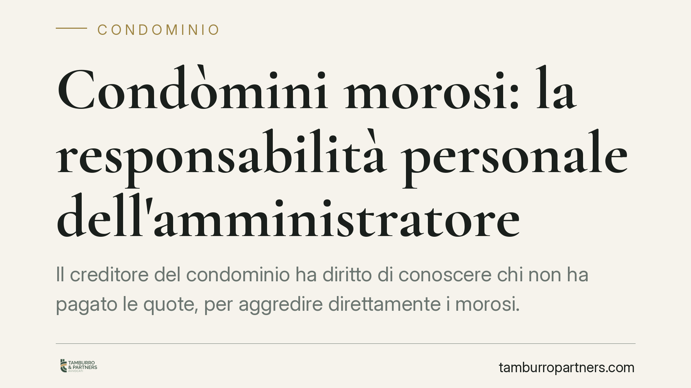
Condòmini morosi: la responsabilità personale dell'amministratore
Il creditore del condominio ha diritto di conoscere chi non ha pagato le quote, per aggredire direttamente i morosi. L'amministratore che nega questi dati può essere condannato a u…
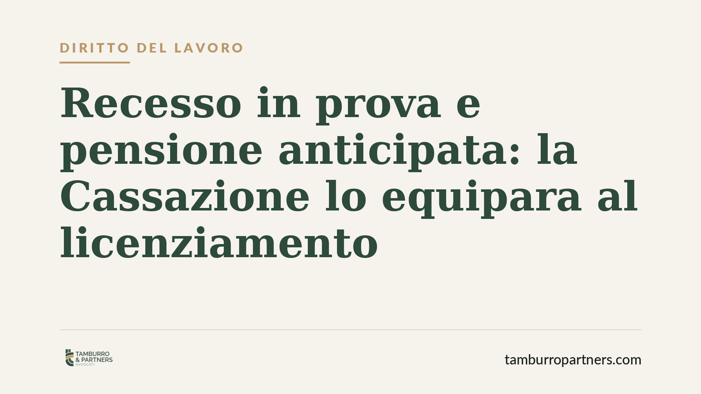
Recesso in prova e pensione anticipata: la Cassazione lo equipara al licenziamento
La Corte di Cassazione ha stabilito che il recesso durante il periodo di prova va equiparato a un licenziamento. La conseguenza è rilevante: il lavoratore precoce che perde il post…
Amministratore di condominio: niente rimborso per le spese pagate con assegni personali
La Corte di Cassazione ribadisce un principio destinato a incidere sulla gestione quotidiana degli edifici: l'amministratore che paga le spese condominiali con assegni personali no…
Divisori dei balconi in condominio: quando sono legali
Il pannello che separa due balconi vicini genera spesso liti tra confinanti: chi ne è proprietario, chi paga le riparazioni e fino a che punto un condòmino può modificarlo o rimuov…
Stipendio non pagato: si può querelare il datore di lavoro?
Il datore che non paga lo stipendio commette un illecito, ma non sempre un reato. Nella maggior parte dei casi si tratta di un inadempimento contrattuale, tutelato in sede civile. …
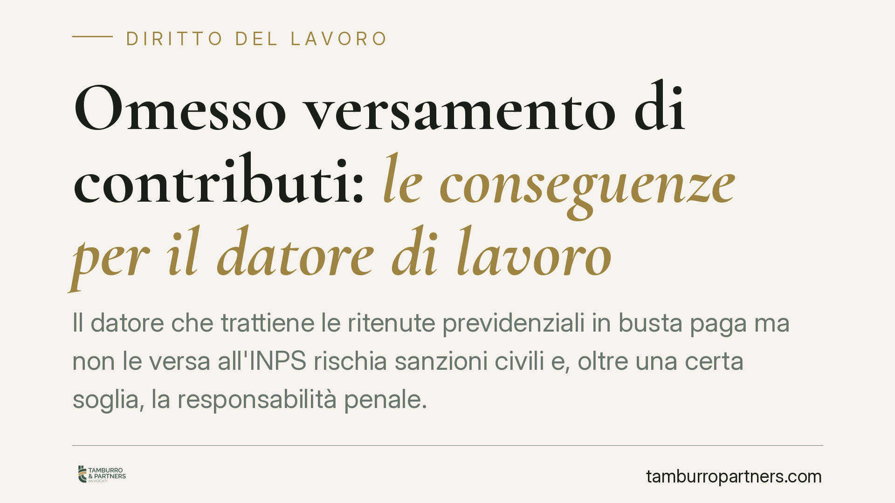
Omesso versamento di contributi: le conseguenze per il datore di lavoro
Il datore che trattiene le ritenute previdenziali in busta paga ma non le versa all'INPS rischia sanzioni civili e, oltre una certa soglia, la responsabilità penale. La legge fissa…
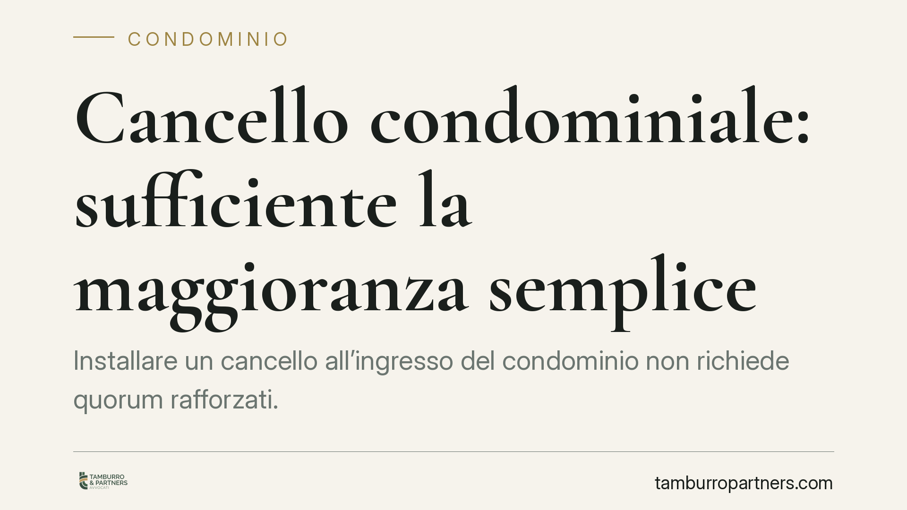
Cancello condominiale: sufficiente la maggioranza semplice
Installare un cancello all'ingresso del condominio non richiede quorum rafforzati. Secondo un recente orientamento della Cassazione, la delibera può essere assunta a maggioranza se…
Rimborso delle spese anticipate dall'amministratore: quando è dovuto
L'amministratore che anticipa somme di tasca propria può poi chiederne il rimborso al condominio? La regola generale impone l'uso del conto corrente dedicato e il vaglio dell'assem…
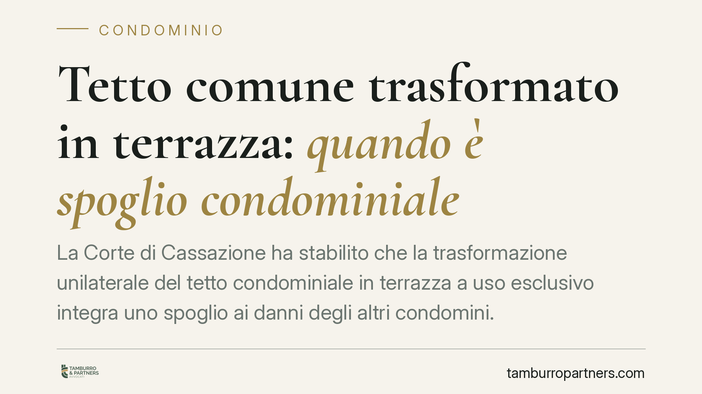
Tetto comune trasformato in terrazza: quando è spoglio condominiale
La Corte di Cassazione ha stabilito che la trasformazione unilaterale del tetto condominiale in terrazza a uso esclusivo integra uno spoglio ai danni degli altri condomini. Un'oper…
Pagamento diretto al creditore del condominio: perché non estingue la quota
Un condomino può saldare di tasca propria il fornitore del condominio e considerarsi liberato? La Corte di Cassazione risponde di no: le quote vanno versate all'amministratore, uni…
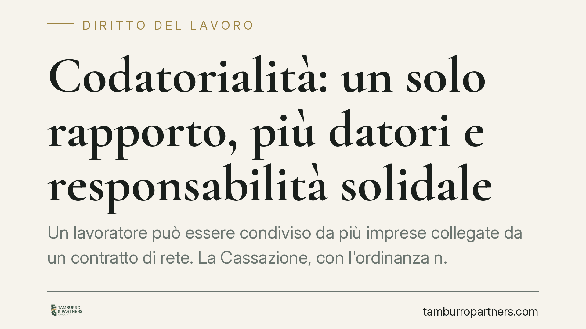
Codatorialità nelle reti d'impresa: un solo rapporto, responsabilità solidale
La codatorialità consente a più imprese di un contratto di rete di condividere lo stesso lavoratore. Ma quel rapporto resta unico, con datori tenuti in solido. Un tema che incide s…
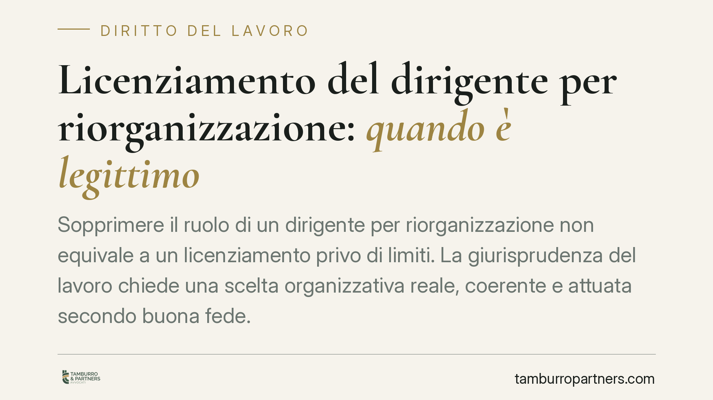
Licenziamento del dirigente per riorganizzazione: quando è legittimo
Sopprimere il ruolo di un dirigente per riorganizzazione non equivale a un licenziamento privo di limiti. La giurisprudenza del lavoro chiede una scelta organizzativa reale, coeren…
Debiti del condominio: il creditore può aggredire i condòmini in regola?
Un creditore del condominio non incassa. Può bussare alla porta del condòmino puntuale, che ha già versato tutte le rate? La risposta ruota attorno alla natura parziaria dell'obbli…
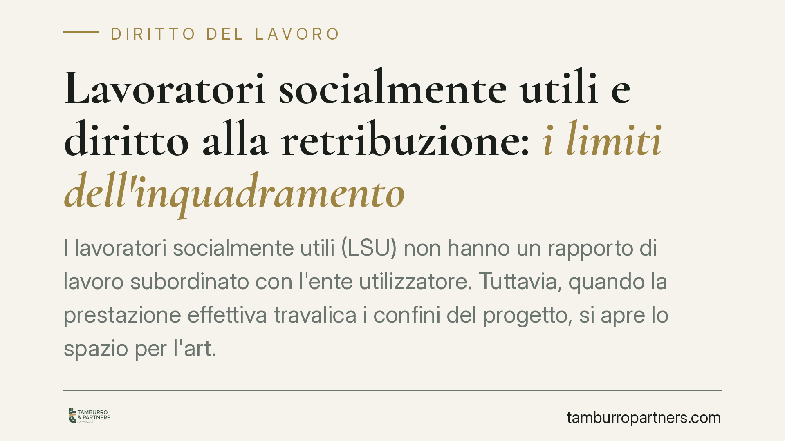
Lavoratori socialmente utili e diritto alla retribuzione: i limiti dell'inquadramento
I lavoratori socialmente utili (LSU) non hanno un rapporto di lavoro subordinato con l'ente utilizzatore. Tuttavia, quando la prestazione effettiva travalica i confini del progetto…
Errore in sala parto: la responsabilità contrattuale della struttura sanitaria
Un recente orientamento del Tribunale di Agrigento riafferma un principio consolidato: la struttura sanitaria risponde su base contrattuale per gli errori commessi in sala parto, c…
Salario giusto e minimi tabellari: cosa dice davvero la giurisprudenza
Un salario può essere formalmente in regola con il contratto collettivo ma comunque insufficiente. La Corte di Cassazione, con le pronunce del 2023, ha chiarito che il giudice può …
Cambiare l'ordine dei punti in assemblea condominiale: si può?
L'ordine del giorno fissa i temi che l'assemblea condominiale può decidere. Ma i condòmini possono invertirne la sequenza o aggiungere argomenti in corso di riunione? Una pronuncia…
Scale e portico tra due edifici vicini: quando sono beni condominiali
La Corte di Cassazione ha stabilito che scale e portici funzionali a due fabbricati adiacenti possono rientrare tra i beni comuni, anche se catastalmente attribuiti a un solo propr…
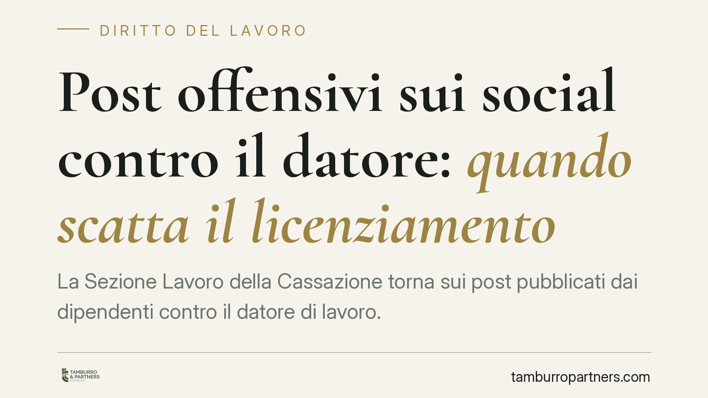
Post offensivi sui social contro il datore: quando scatta il licenziamento
La Sezione Lavoro della Cassazione torna sui post pubblicati dai dipendenti contro il datore di lavoro. Il licenziamento per giusta causa può essere legittimo, ma non in automatico…
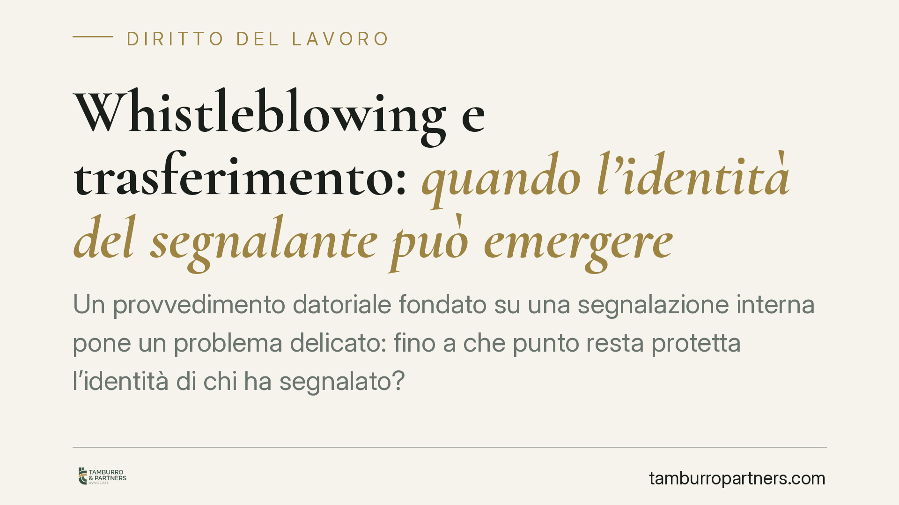
Whistleblowing e trasferimento: quando l'identità del segnalante può emergere
Un provvedimento datoriale fondato su una segnalazione interna pone un problema delicato: fino a che punto resta protetta l'identità di chi ha segnalato? La disciplina whistleblowi…
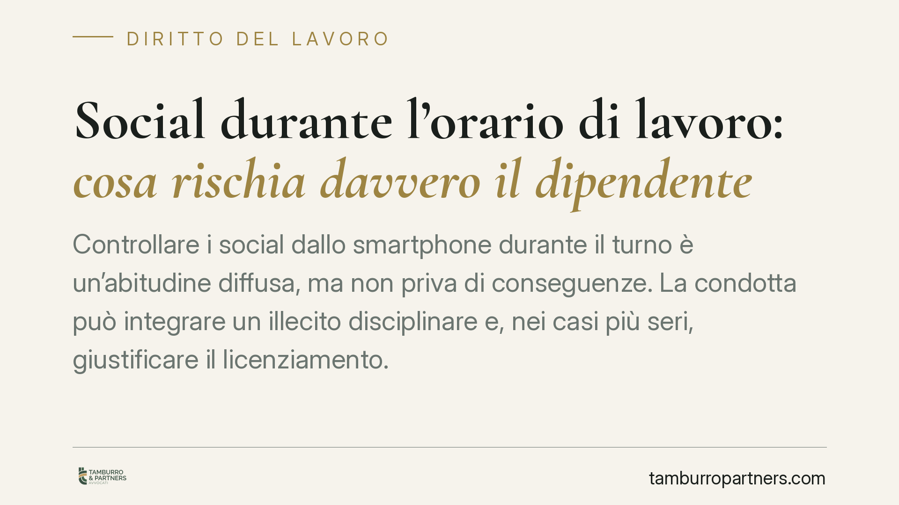
Social durante l'orario di lavoro: cosa rischia davvero il dipendente
Controllare i social dallo smartphone durante il turno è un'abitudine diffusa, ma non priva di conseguenze. La condotta può integrare un illecito disciplinare e, nei casi più seri,…
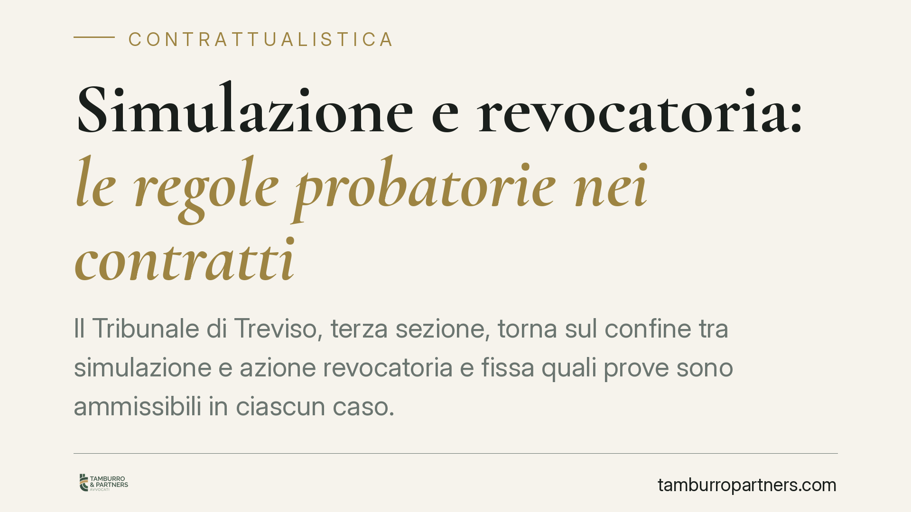
Simulazione e revocatoria: le regole probatorie nei contratti
Il Tribunale di Treviso, terza sezione, torna sul confine tra simulazione e azione revocatoria e fissa quali prove sono ammissibili in ciascun caso. La distinzione non è teorica: c…
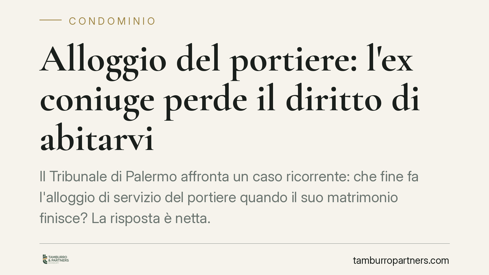
Alloggio del portiere: l'ex coniuge perde il diritto di abitarvi
Il Tribunale di Palermo affronta un caso ricorrente: che fine fa l'alloggio di servizio del portiere quando il suo matrimonio finisce? La risposta è netta. L'ex coniuge non può con…
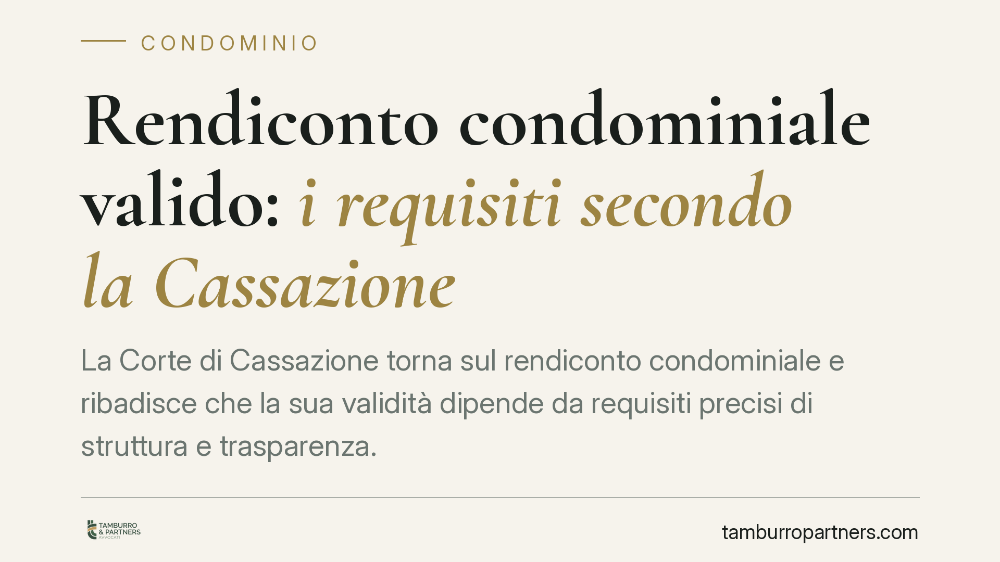
Rendiconto condominiale valido: i requisiti secondo la Cassazione
La Corte di Cassazione torna sul rendiconto condominiale e ribadisce che la sua validità dipende da requisiti precisi di struttura e trasparenza. Non basta un elenco di voci: servo…
Malattia e controlli investigativi: i limiti al controllo del datore di lavoro
Il controllo del lavoratore assente per malattia tramite investigatori privati è ammesso, ma entro limiti precisi. Un orientamento consolidato della giurisprudenza del lavoro chiar…
Dimissioni per giusta causa: il requisito dell'immediatezza
Chi si dimette per giusta causa deve reagire con tempestività. Attendere troppo tempo dopo l'inadempimento del datore rischia di svuotare il diritto: la tolleranza prolungata segna…